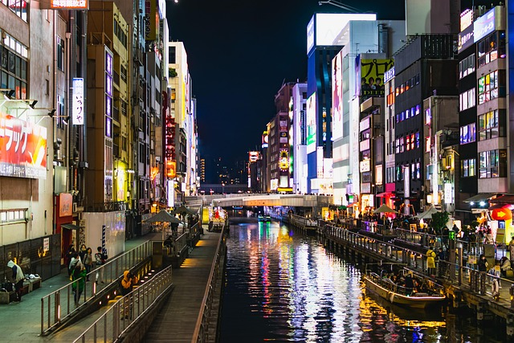
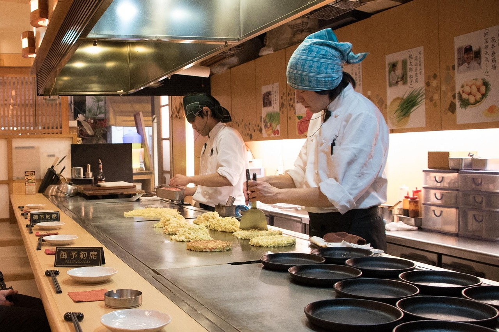
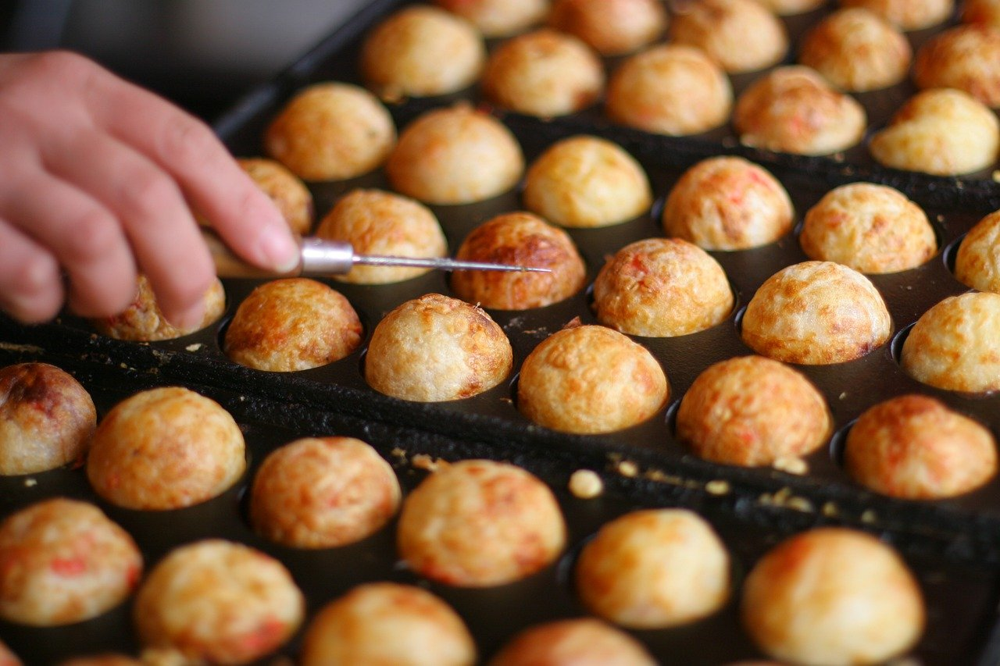
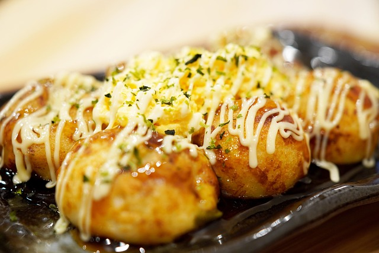
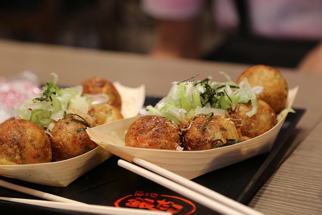
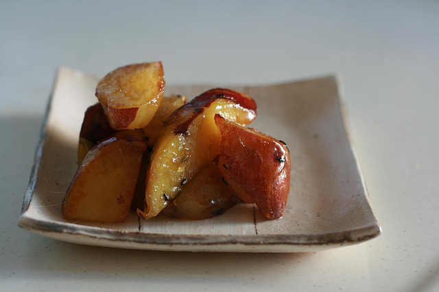

➽ Höre die japanische Klänge von Jikan Wa Mikata Da an:
Osaka ist eine lebendige Parade aus Düften, Farben und Geschichten, die
sich durch die Straßen zieht. Auf einem einzigen Bummel durch Dotonbori
scheinen sich die Schaufenster zu bewegen: Neonzeichen, das Gelächter
der Kellner, der Klang von gackernden Frittiergeräten. Hier ein
Mini-Reisebericht über drei ikonische Gerichte, die man unbedingt
probieren sollte.

Okonomiyaki: Der Pfannenkünstler der Stadt In Osaka ist
Okonomiyaki kein Gericht, sondern eine Kunstform.

Am Straßenrand steht oft eine Kochplatte, auf der ein großer, runder
Teigboden entsteht: Mehl, Ei, fein gehackter Kohl, Wasser,
manchmal kleine Garnelen oder Speck.
Der Koch mischt alles direkt vor dir, gießt eine flache Scheibe auf die
heiße Platte und arbeitet mit einem Spatel daran, Schichten zu formen.
Wenn der Boden knusprig ist, wird eine spezielle Soße darüber gestrichen
– süß-salzig, rauchig – gefolgt von Mayonnaise in feinen Streifen,
getrockneten Bonito-Flocken, eingelegt Gemüse und einer Prise Aonori
(getrocknete Algenpulver).
Wenn du den ersten Biss nimmst, merkst du die süßliche Tiefe des Kohls,
die zarte Textur des Teigs und die cremig-säuerliche Note der Soße. Es
ist wie ein harmonisches Gespräch aus Normalität und Überraschung.
Takoyaki: Kleine Wolken aus Meer

Takoyaki sind runde Köstlichkeiten, klein, goldbraun und heiß in der
Hand. Aus einem speziellen Walzenkessel geformt, werden weiche
Teigkugeln mit Würfeln von Tintenfisch (tako), Frühlingszwiebeln,
Tempura-Stücken (tenkasu) und Ingwer gefüllt. Während sie
brutzeln, wenden sie die Kugeln mit einem Spatel, bis außen eine
knusprige Kruste entsteht. Sobald sie fertig sind, kommen sie in eine
Pappschale, bestäubt mit Bonito-Flocken und einem leichten Überzug aus
Takoyaki-Sauce, Mayonnaise, noch mehr Bonito und gehacktem Aonori.
Der Tintenfisch im Inneren ist zart, der Teig außen knackig – ein
angenehmes Spiel von Hitze, Textur und salziger Umarmung. Legst du die
erste Takoyaki in den Mund, zergeht der innere Kern fast auf der Zunge,
begleitet von einem leichten Hauch von Japanische Schalotte.
Yaki Imo: Herbstgefühle am Spieß

Yaki Imo, gebackene Süßkartoffeln, gibt es oft direkt aus
großen Holzschalen, die in heißen Gruben ruhen. Die Verkäufer schneiden
die knusprige Schale auf, legen die warme Kartoffel in eine Papiertüte
und bestreuen sie mit etwas grobem Salz. Die Süße der Kartoffel,
karamellisiert durch das Rösten, erinnert an Herbstabende am Fluß. Der
erste Duft entfaltet eine süßliche, fast nussige Note, während du die
dampfende, weiche Textur zerdrückst.
Manchmal wird sie mit einer leichten Butterbestäubung oder sogar mit
einer Prise Zucker veredelt, doch der wahre Charme liegt in der
Einfachheit: das Reißen der Schale, der warme Dampf, das gemütliche
Gefühl, langsam zu essen, während die Straße um dich herum pulsieret.
Osaka verbindet Tradition mit Tempo – und Streetfood ist der perfekte
Spiegel dieser Energie. Wenn du durch Dotonbori gehst, lass dich
treiben: der Geruch von Soße, das Kratzen der Pfannen, das helle
Leuchten der Reklamen – und du weißt, warum Osaka als „Karte der Küche
Japans“ gilt.